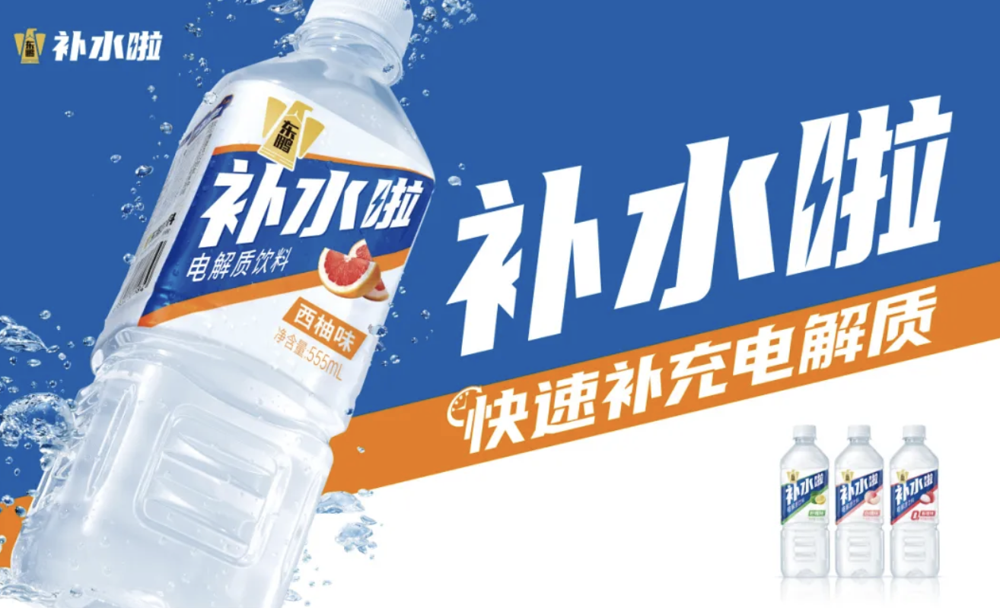
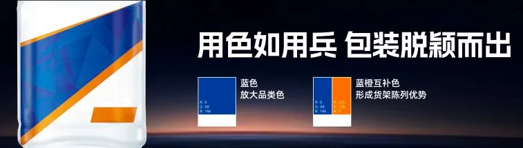

01 · 包装
包装的第一目的，是让产品被发现和理解
新产品进入成熟饮料货架时，名称、品类和核心利益必须迅速被看见。项目放大关键信息，减少不能帮助选择的视觉干扰。

02 · 陈列
让单瓶与整排货架都形成品牌面积
包装不仅要在手中好看，也要在冰柜、货架和成组陈列中形成连续信号。统一色彩与信息位置提高终端识别。

03 · 传播
广告只集中放大产品购买理由
传播不另讲一套故事，而是重复消费者在包装上看到的信息。品牌名、产品价值与行动指令保持一致，减少传播到购买之间的损耗。

04 · 增长
新品继续继承企业已有的渠道能力
清晰包装和传播帮助渠道快速理解新品，既利用东鹏既有的终端能力，也为企业建立新的品类增长入口。